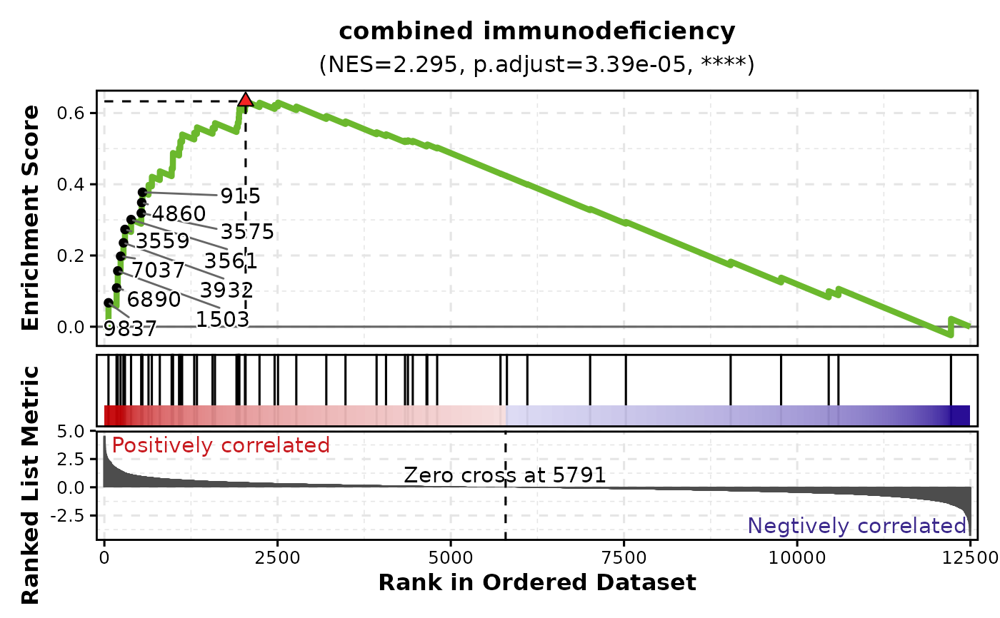
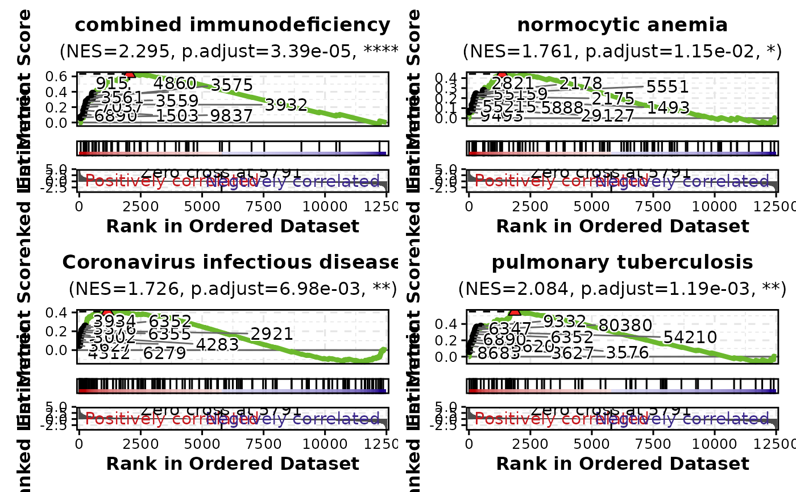
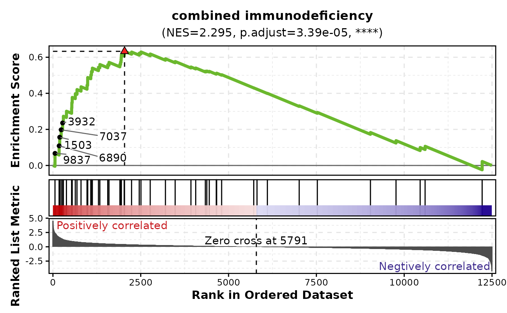
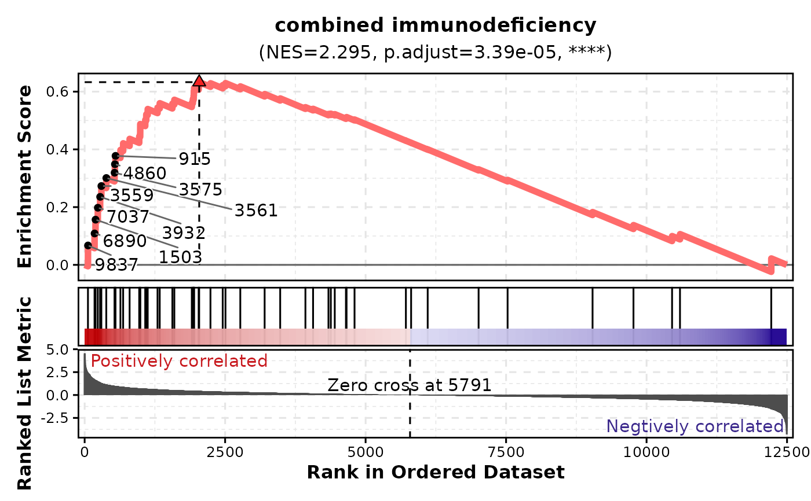

Creates detailed GSEA plots for one or more gene sets, showing the running enrichment score, gene positions, and ranked list metric for each set.
Usage
GSEAPlot(
data,
in_form = c("auto", "dose", "fgsea"),
gene_ranks = "@gene_ranks",
gene_sets = "@gene_sets",
gs = NULL,
sample_coregenes = FALSE,
line_width = 1.5,
line_alpha = 1,
line_color = "#6BB82D",
n_coregenes = 10,
genes_label = NULL,
label_fg = "black",
label_bg = "white",
label_bg_r = 0.1,
label_size = 4,
title = NULL,
subtitle = NULL,
xlab = NULL,
ylab = NULL,
combine = TRUE,
nrow = NULL,
ncol = NULL,
byrow = TRUE,
seed = 8525,
axes = NULL,
axis_titles = axes,
guides = NULL,
design = NULL,
theme = "theme_ggforge",
...
)Arguments
- data
A data frame containing the data to plot
- in_form
The format of the input data
fgsea: The input data is from thefgseapackage.dose: The input data is from theDOSEpackage.auto: Automatically detect the format of the input data. When "leadingEdge" is in the input data, it will be treated as "fgsea"; otherwise, if "core_enrichment" is in the input data, it will be treated as "dose".
- gene_ranks
A numeric vector of gene ranks with genes as names The gene ranks are used to plot the gene sets. If
gene_ranksis a character vector starting with@, the gene ranks will be taken from the attribute ofdata.- gene_sets
A list of gene sets, typically from a record of a GMT file The names of the list should match the
IDcolumn ofdata. Ifgene_setsis a character vector starting with@, the gene sets will be taken from the attribute ofdata. The GSEA plots will be plotted for each gene set. So, the number of plots will be the number of gene sets. If you only want to plot a subset of gene sets, you can subset thegene_setsbefore passing it to this function.- gs
The names of the gene sets to plot If
NULL, all gene sets ingene_setswill be plotted.- sample_coregenes
A logical value to sample the core genes from the core_enrichment; if
FALSE, the firstn_coregeneswill be used- line_width
The width of the line in the running score plot
- line_alpha
The alpha of the line in the running score plot
- line_color
The color of the line in the running score plot
- n_coregenes
The number of core genes to label
- genes_label
The genes to label. If set,
n_coregeneswill be ignored- label_fg
The color of the label text
- label_bg
The background color of the label
- label_bg_r
The radius of the background color of the label
- label_size
The size of the label text
- title
Plot title
- subtitle
Plot subtitle
- xlab
X-axis label
- ylab
Y-axis label
- combine
Whether to combine split plots into one
- nrow
Number of rows when combining plots
- ncol
Number of columns when combining plots
- byrow
Fill combined plots by row
- seed
Random seed for reproducibility
- axes
How to handle axes in combined plots ("keep", "collect", "collect_x", "collect_y")
- axis_titles
How to handle axis titles in combined plots
- guides
How to handle guides in combined plots ("collect", "keep", "auto")
- design
Custom layout design for combined plots
- theme
Theme name (string) or theme function
Examples
# \donttest{
data(gsea_example)
# Plot single gene set
GSEAPlot(gsea_example, gene_sets = attr(gsea_example, "gene_sets")[1])

# Plot multiple gene sets
GSEAPlot(gsea_example, gene_sets = attr(gsea_example, "gene_sets")[1:4])

# Label core genes
GSEAPlot(
gsea_example,
gene_sets = attr(gsea_example, "gene_sets")[1],
n_coregenes = 5
)

# Customize line appearance
GSEAPlot(
gsea_example,
gene_sets = attr(gsea_example, "gene_sets")[1],
line_width = 2,
line_color = "#FF6B6B"
)

# Return separate plots instead of combined
plots <- GSEAPlot(
gsea_example,
gene_sets = attr(gsea_example, "gene_sets")[1:3],
combine = FALSE
)
# }